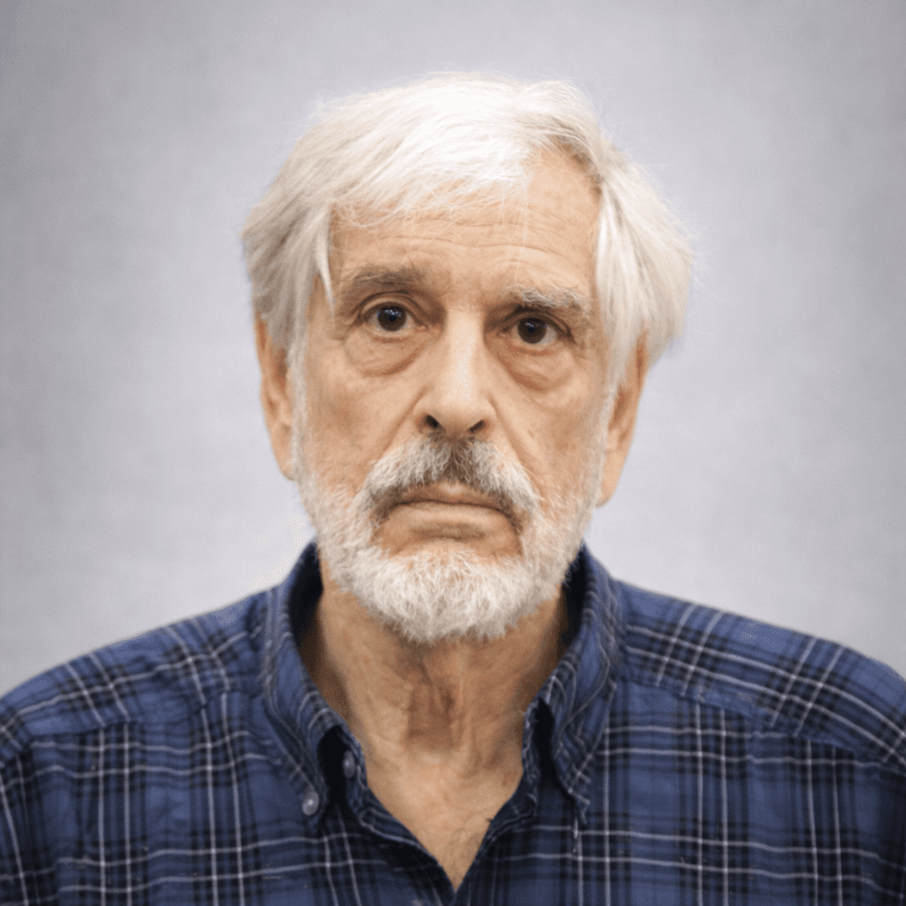
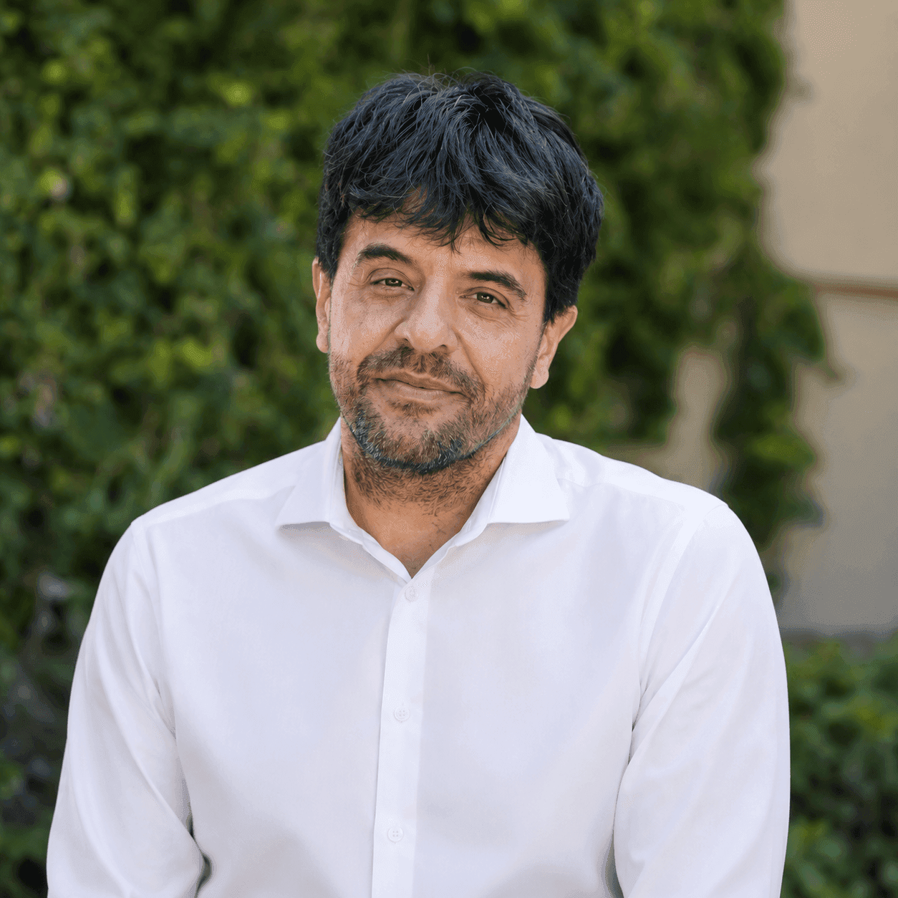
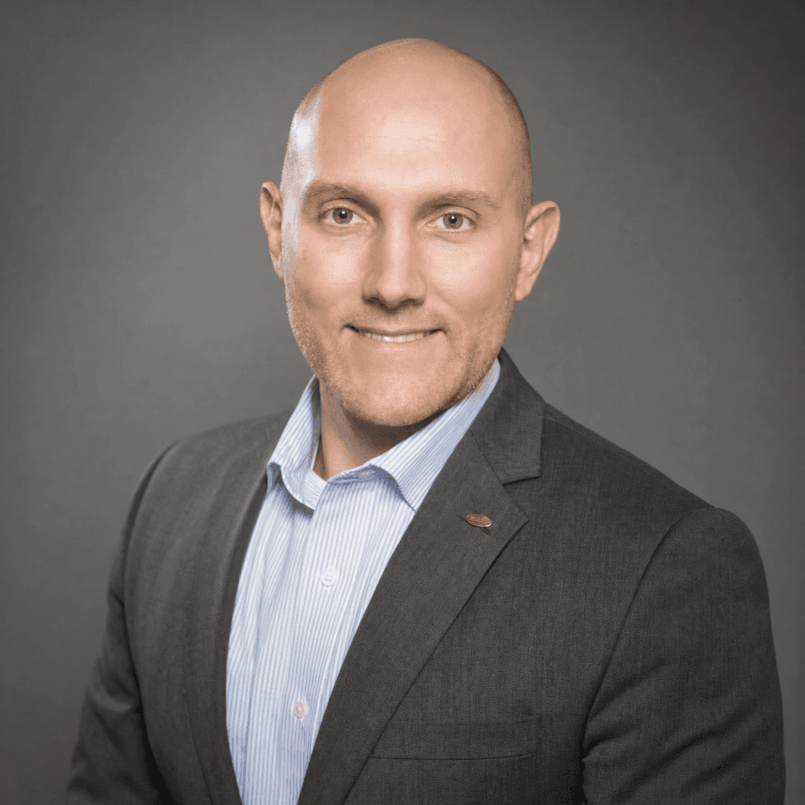

The Frontier Workshop on Embodiment and AI · Dual-Embodiment Frameworks · Toward Felt Cognition
The intersection of Embodiment and AI represents one of the most vital frontiers in modern artificial intelligence. While current Multimodal Large Language Models (MLLMs) demonstrate an extraordinary capacity to bridge textual and visual inputs, they face significant limitations in situated physical and social interactions.
These models lack bodily experience, understanding the world largely through statistical associations. To advance embodiment in artificial intelligence and achieve genuine world comprehension, we posit that models must move beyond token associations toward "felt" cognition supported by integrated internal and external world models.
This workshop introduces our Dual-Embodiment Framework proposed recently in Neuron (Kadambi et al., 2026), which integrates two complementary domains: external embodiment (interactions with the external world) and internal embodiment (internal dynamics, proprioception, and homeostasis). We will explore how explicitly operationalizing internal embodiment through our definition of continuous state modeling can be applied toward breakthroughs in AI performance and safety.
Our goal is to convene researchers across frontier disciplines in AI, cognitive science, neuroscience, and robotics, to discuss translating embodiment in AI into implementable architectures and defining new internally-aligned benchmarks.
Leading researchers across cognitive neuroscience, artificial intelligence, and psychiatry establishing the frontiers of internal embodiment, continuous state modeling, and biological-machine alignment.
 ★ Distinguished Keynote
★ Distinguished Keynote
Director, Brain and Creativity Institute
David Dornsife Chair in Neuroscience, Professor of Psychology, Philosophy, and Neurology · University of Southern California (USC)
World-renowned neuroscientist and author whose seminal research uncovered the neural substrates of emotion, feelings, decision-making, and consciousness. Pioneer of the somatic marker hypothesis and foundational works on homeostasis in cognitive architecture.
 Google DeepMind
Google DeepMind
Distinguished Research Scientist
Google DeepMind
Pioneering research leader in multimodal foundation models, situated AI, and embodied intelligence.
 IACS
IACS
Senior Research Scientist
Institute for Advanced Consciousness Studies
Leading investigator examining empathy, interoceptive awareness, and relational AI alignment.
 UCLA
UCLA
Associate Professor & Psychiatrist
UCLA
Leading neuroscientist and clinician pioneering human interoception and visceral neural pathways.
 Univ. of Parma
Univ. of Parma
Professor of Cognitive Neuroscience
University of Parma, Italy
World-renowned cognitive neuroscientist, co-discoverer of mirror neurons, and pioneer in embodied simulation.
 Google DeepMind
Google DeepMind
Organizer & Speaker
Google DeepMind · UCLA / USC
Neuroscientist focusing on humanistic and embodied neuroscience, continuous state modeling, and artificial intelligence architectures.
 UCLA
UCLA
Organizer & Speaker
UCLA Brain Research Institute
Globally recognized pioneer of the mirror neuron system, action processing, empathy, and social cognition.
 USC BCI
USC BCI
Organizer & Speaker
USC Brain & Creativity Institute
Leading expert in the cognitive neuroscience of embodiment, action observation, and language processing in the human brain.
 Google DeepMind
Google DeepMind
Organizer & Speaker
Google DeepMind, Zurich
Distinguished research scientist pioneering neural theories of language, embodied meaning, and next-generation AI architectures.
Transforming MLLMs from symbolic processors into agentic systems capable of purposeful interactions across physical/virtual environments and internal regulatory states.
Fostering discussion to produce more internally-aligned systems. We aim to examine how “homeostatic coupling” may provide intrinsic incentives for prosocial behavior in human and artificial systems.
Comparing interoception in biological systems and internal state modeling in artificial systems, and the implications for alternative, artificial forms of consciousness.
Transitioning the AI community toward benchmarks that also measure internal dynamics.
Saturday, November 7, 2026 · 10:10 AM – 12:10 PM (Day 3)
The Neuroscience of Internal Embodiment and Dual-Embodiment Frameworks
Setting the stage for the workshop with foundational perspectives on internal embodiment from neuroscience and AI, introducing the continuous state modeling framework.
Continuous Internal Regulators & Proprioceptive Interfaces
Rapid-fire presentations covering proprioceptive feedback, self-monitoring algorithms, and continuous internal regulators.
"AI Safety and AI Performance: Compatible Internal State Dynamics"
A moderated panel exploring the intersection of safety objectives and performance gains through internal state modeling, concluding with collaborative drafting for the Community Roadmap.
Following the workshop, selected speakers, panelists, and interested attendees will collaborate to draft the definitive Vision & Roadmap Paper on Internal Embodiment in AI.
Rather than a traditional call for papers, our workshop focuses on interactive dialogue, synthesis, and collaborative community output. Attendees interested in co-authoring and shaping the future research agenda will join our post-workshop working group across three core pillars:
Working Group: Selected speakers and interested attendees can indicate their interest in contributing to the Roadmap Paper during our interactive session or via our registration form.
Publication: The consensus roadmap and key insights will be targeted for publication as a major Perspective / Position Paper in a premier interdisciplinary journal.
Information below is provided directly from the official AIAS+ Event Registration & Venue Portal.
Take advantage of our exclusive conference rate at The Ritz-Carlton, San Francisco—your home base for the full event experience. A dedicated booking link is available directly on this site, giving you access to preferred pricing at this iconic venue just steps from all conference programming. We encourage you to reserve early, as availability is limited and rooms are expected to fill quickly.
The Chen Institute Symposium for AI Advancing Science & Society (AIAS⁺) offers both one-day and three-day registration passes. Each pass includes admission to technical sessions, keynote presentations, and panel discussions scheduled for the selected day(s), along with networking opportunities, access to conference materials, and daily meals. Depending on the pass selected, attendees will have access to specific talks and special events.
Gain access to plenary talks from leading voices in AI and science, alongside cutting-edge poster sessions showcasing emerging research and breakthrough ideas. Engage directly with presenters, explore new methodologies, and stay at the forefront of innovation through both curated talks and interactive discussions.
Curated networking experiences designed to connect you with industry leaders, top researchers, and leading investors. Engage in meaningful conversations, build strategic relationships, and expand your network within a highly influential community at the forefront of AI and science.
Daily breakfast and lunch throughout the conference, plus snacks and beverages during scheduled breaks.
Full access to all conference materials, proceedings, and published resources.
Workshop insights, panel conclusions, and selected contributions will feed into a collaborative Vision & Roadmap Paper on Internal Embodiment in AI.
Formation of a working group dedicated to formalizing rich embodiment metrics across AI, neuroscience, and robotics.
A proposed suite of open-source benchmark datasets related to internal state modeling and homeostatic coupling.

Stanford
Stanford
Columbia Univ.Be part of the conversation shaping the future of embodied AI. Register for our workshop and the AIAS+ 2026 conference.
All participants must also register through the official AIAS+ 2026 registration portal.